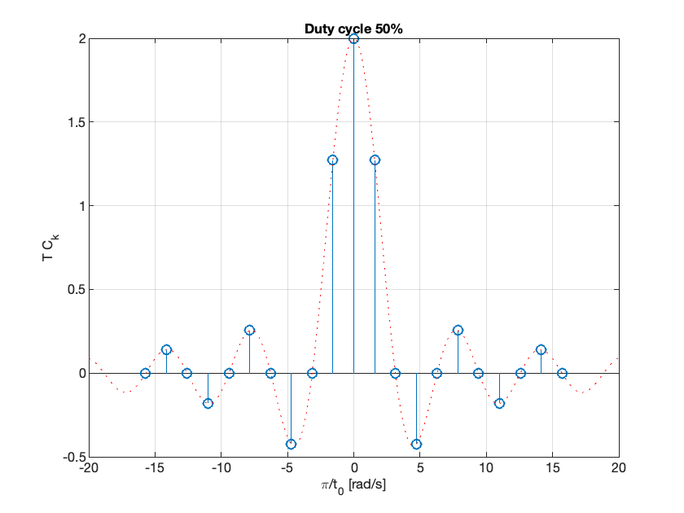
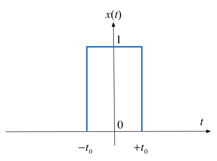

Defining the Fourier Transform
Agenda
-
Fourier Transform as the Limit of a Fourier Series
-
Doing the Maths
-
Special forms of the Fourier Transform
-
Properties of the Fourier Transform
-
Computing Fourier Transforms in Matlab
Fourier Transform as the Limit of a Fourier Series
We start by considering the pulse train that we used in the last lecture and demonstrate that the discrete line spectra for the Fourier Series becomes a continuous spectrum as the signal becomes aperiodic.
This analysis is from Boulet pp 142—144 and 176—180.
Let $\tilde x(t)$ be the Fourier series of the rectangular pulse train shown below:

Fourier Series
In the previous section we used*
to compute the line spectra.
* Note there has been a slight change of nomenclature: previously we used $\Omega_0$ and $T_0$ for what we now call $\omega_0$ and $T$.
From the Time Point of View
If we instead take a time point-of-view and let $A = 1$
Let’s complete the analysis on the whiteboard.
The Sinc Function
The function, $\sin(x)/x$ crops up again and again in Fourier analysis. The Fourier coefficients $C_k$ are scaled samples of the real continuous normalized sinc function defined as follows:
The function is equal to 1 at $u=0$* and has zero crossings at $u=\pm n,\; n=1,2,3,\ldots$ as shown below.
Plot the sinc function
Plots:
x = linspace(-5,5,1000);
plot(x,sin(pi.*x)./(pi.*x))
grid
title('Graph of sinc function')
ylabel('sinc(u)')
xlabel('u')

Matlab code to reproduce this plot: sinc_plot.m.
Note $sin(\pi u)/(\pi u)$ is undefined at $u = 0$. To compute its value we need to take the limit
which can be shown to be 1. I leave the discovery of the proof to you and the internet.
Duty cycle
- We define the duty cycle $\eta = 2t_0/T$ of the rectangular pulse train as the fraction of the time the signal is “on” (equal to 1) over one period.
- The duty cycle is often given as a percentage.
The spectral coefficients expressed using the normalized sinc function and the duty cycle can be written as
Normalize the spectral coefficients
Let us normalize the spectral coefficients of $\tilde x(t)$ by mutiplying them by $T$, and assume $t_0$ is fixed so that the duty cycle $\eta = 2t_0/T$ will decrease as we increase $T$:
Then the normalized coefficents $T C_k$ of the rectangular wave a sinc envelope with constant amplitude at the origin equal to $2t_0$, and a zero crossing at fixed frequency $\pi/t_0$ rad/s, both independent of T.
Plots follow (use duty_cycle.m to reproduce).
Durty cycle 50%

Duty cycle 12.5%

Comments
- As the fundamental period increases, we get more spectral lines packed into the lobes of the sinc envelope.
-
These normalized spectral coefficients turn out to be samples of the continuous sinc function on the spectrum of $\tilde{x}(t)$
- The two spectra are plotted against the frequency variable $k\omega_0$ with units of rad/s rather than index of harmonic component
- The first zeros of each side of the main lobe are at frequencies $\omega = \pm \pi/t_0$ rad/s
- The zero-crossing points of sinc envelope are independent of the period T. They only depend on $t_0$.
Intuition leading to the Fourier Transform
- An aperiodic signal that has been made periodic by “repeating” its graph every $T$ seconds will have a line spectrum that becomes more and more dense as the fundamental period is made longer and longer.
- The line spectrum has the same continuous envelope.
- As $T$ goes to infinity, the line spectrum will become a continuous function of $\omega$.
- The envelope is this function.
Doing the Maths
Fourier series coefficients for the rectangular wave are computed using:
where $\omega_0 = 2\pi/T$ as usual.
Now define a signal $x(t)$ as a signal equal to $\tilde{x}(t)$ over one period and zero elsewhere.

A rectangular pulse
The aperiodic signal, a single rectangular pulse, can be thought of as being periodic with an infinite fundamental period (we will let $T\to +\infty$ later).
Since $\tilde{x}(t)=x(t)$ over $t \in [-T/2,T/2]$, the spectral coefficients $C_k$ of the periodic signal $\tilde{x}(t)$ can be written in terms of the aperiodic signal $x(t)$ as follows:
Let us define the envelope $X(j\omega)$ of $T C_k$ (we already know this to be the sinc function):
The coefficients $C_k$ are therefore samples of the continuous envelope $X(j\omega)$:
Back to the periodic signal
$\tilde{x}(t)$ has the Fourier series representation
or equivalently, since $\omega_0 = 2\pi/T$:
Now take the limits
At the limit, as $T\to \infty$, in
We get
- $\omega_0 \to d\omega$ – the fundamental frequency becomes infinitesimally small.
- $k\omega_0 \to \omega$ – harmonic frequencies get so close together they become a continuum.
- The summation becomes an integral.
- $\tilde{x}(t) \to x(t)$ – the periodic signal tends to the aperiodic signal.
Define the Inverse Fourier and Fourier Transform
Putting these elements together we have an expression for the aperiodic signal in terms of its Fourier transform:
Inverse Fourier Transform:
Similarly, given the expression we have already seen for an arbitrary $x(t)$:
Fourier Transform:
Fourier Transform Pair
-
The two equations on the previous slide are called the Fourier transform pair.
- They are analogous to the Laplace transform pair we have already seen and we can develop tables of properties and transform pairs in the same way.
- Equation $X(j\omega) = \int_{-\infty}^{\infty}x(t)e^{-j\omega t}\,dt.$ gives the Fourier transform or the frequency spectrum of the signal $x(t)$.
- Equation $x(t) = \frac{1}{2\pi} \int_{-\infty}^{\infty} X(j\omega)e^{j\omega t}\,d\omega.$ is the inverse Fourier transform. It gives the function of time that has a given spectrum in the frequency domain.
Special Forms of the Fourier Transform
The table on the next slide is developed in Section 8.2 of Karris by assuming that in general both $f(t)$ and $F(j\omega)$ are complex. So that:
The Fourier transform can therefore be rewritten
which by Euler’s identity becomes
So the Real and Imaginary parts of $F(j\omega)$ are
We can do a similar analysis for the inverse Fourier transform.
Time Domain and Frequecy Domain Correspondence
By consideration of the Real and Imaginary parts of $f(t)$ and $F(j\omega)$ we can construct the following table. See Sections 8.2.1 Real-Time Functions and 8.2.2 Imaginary Time Functions which shows the summarizes the nature of the Fourier transform for particular types of the signal.
| $f(t)$ | $F(j\omega)$ | |||||||||
| Real | Imaginary | Complex | Even | Odd | ||||||
| Real | √ | |||||||||
| Real and Even | √ | √ | ||||||||
| Real and Odd | √ | √ | ||||||||
| Imaginary | √ | |||||||||
| Imaginary and Even | √ | √ | ||||||||
| Imaginary and Odd | √ | √ | ||||||||
| **Name** | $f(t)$ | $F(j\omega)$ | **Remarks** | |
| 1 | Linearity | $a_1f_1(t)+a_2f_2(t)+\cdots+a_nf_n(t)$ | $a_1F_1(j\omega)+a_2F_2(j\omega)+\cdots+a_nF_n(j\omega)$ | Fourier transform is a linear operator. |
| 2 | Symmetry | $2\pi f(-j\omega)$ | $F(t)$ | |
| 3. | Time and frequency scaling | $f(\alpha t)$ | $$\frac{1}{|\alpha|}F\left(j\frac{\omega}{\alpha}\right)$$ | time compression is frequency expansion and *vice versa* |
| 4. | Time shifting | $$f(t-t_0)$$ | $$e^{-j\omega t_0}F(j\omega)$$ | A time shift corresponds to a phase shift in frequency domain |
| 5. | Frequency shifting | $$e^{j\omega_0 t}f(t)$$ | $$F(j\omega-j\omega_0)$$ | Multiplying a signal by a complex exponential results in a frequency shift. |
| 6. | Time differentiation | $$\frac{d^n}{dt^n}\,f(t)$$ | $$(j\omega)^nF(j\omega)$$ | |
| 7. | Frequency differentiation | $$(-jt)^n f(t)$$ | $$\frac{d^n}{d\omega^n}F(j\omega)$$ | |
| 8. | Time integration | $$\int_{-\infty}^{t}f(\tau)d\tau$$ | $$\frac{F(j\omega)}{j\omega}+\pi F(0)\delta(\omega)$$ | |
| 9. | Conjugation | $$f^*(t)$$ | $$F^*(-j\omega)$$ | |
| 10. | Time convolution | $$f_1(t)*f_2(t)$$ | $$F_1(j\omega) F_2(j\omega)$$ | Compare with Laplace Transform |
| 11. | Frequency convolution | $$f_1(t)f_2(t)$$ | $$\frac{1}{2\pi} F_1(j\omega)*F_2(j\omega)$$ | This has application to amplitude modulation as shown in Boulet pp 182—183. |
| 12. | Area under $f(t)$ | $$\int_{-\infty}^{\infty} f(t)\,dt = F(0)$$ | Way to calculate DC (or average) value of a signal | |
| 13. | Area under $F(j\omega)$ | $$f(0) = \frac{1}{2\pi}\int_{-\infty}^{\infty} F(j\omega)\,d\omega$$ | ||
| 14. | Energy-Density Spectrum | $$E_{[\omega_1,\omega_2]}:=\frac{1}{2\pi}\int_{\omega_1}^{\omega_2}|F(j\omega)|^2\,d\omega.$$ | ||
| 15. | Parseval's theorem | $$\int_{-\infty}^{\infty}|f(t)|^2\,dt=\frac{1}{2\pi}\int_{-\infty}^{\infty}|F(j\omega)|^2\,d\omega.$$ | Definition RMS follows from this |